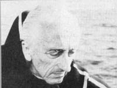

"Among the strongest motivations of human beings," Jacques-Yves Cousteau explains, "are dream, convenience, and survival. Dream has triggered the conquest of the moon and is-together with curiosity-the prime mover in fundamental science. Convenience, which involves economics, has mobilized the use of remote sensing from satellites to help chase and catch the last fish or to find the last oil to be burned away. The instinct of survival, that turns an endangered man into a furious fighter, may soon discharge some adrenalin into mankind's blood and help organize a global remote sensing rescue operation."
Cousteau has recently invested a great deal of his time in promoting the "global remote sensing rescue operation" that he mentions. Speaking before the Remote Sensing Symposium of the University of Michigan in Ann Arbor in 1975, Cousteau said he would like to see implemented a worldwide, permanent, and sophisticated pollution-monitoring program "involving specially designed satellites, permanently assigned aircraft, and instrumented regular commercial [airline-type] airplanes". According to Cousteau, "Satellites would collect data from thousands of instrumented buoys, either drifting or anchored in deep waters, all over the oceans of the world. A preliminary blueprint of such needs includes about 100 very sophisticated buoys anchored in deep water, 500 less sophisticated anchored buoys, and 10,000 drifting buoys ... preferably parachuted year round and replaced-as they drift ashore or stop working-at the estimated rate of 5,000 per year."
The cost of Jacques-Yves Cousteau's proposed global monitoring system would be high-between $100,000,000 and $120,000,000 a year-but according to the famed oceanographer/ explorer, "This is the only way for us to sense the 'pulse of the oceans' . . . and we know that the pulse of the oceans is the only symptom [we have] to help us diagnose the degree of health of the pyramid of life that we have the privilege to hold at our mercy."
Cousteau remarks: "What has yet to be fully realized by people at large is that life was born in water, that water is indispensable to life in general, and consequently that efficient protection of the water systems of the whole world is indispensable for our very survival."
[If you'd like to aid Jacques Cousteau in his work, write to The Cousteau Society, Inc., 777 Third Ave., New York, N.Y. 10017. Annual dues are $15, and members receive - among other reports - a bimonthly newsletter, the Calypso Log. - The Editors.]
In 1951, Dr. Maria Telkes predicted in a national publication that the year 1975 would mark the start of a rapidly growing interest in solar energy. Her statement didn't stir a whole lot of interest, she recalls.
"Everyone said, 'Oh, poor Maria, she's just sunstruck.' "
But, as we all know, Dr. Telkes was absolutely right. (Actually, she admits, the interest began in 1973 with the oil crisis ... but she maintains that it didn't really start to catch fire until '75.)
Maria Telkes came to this country from Hungary in 1925, and was naturalized in 1937. In 1940, she began a long association with the Massachusetts Institute of Technology, which had recently been given a large private grant to develop solar energy. During her tenure at MIT, she worked with Dr. Hoyt Hottel, a leading solar scientist, and in 1948 Dr. Telkes designed the heat storage system for an MITbuilt solar house in Dover, Massachusetts (one of the very first to be constructed anywhere).
Dr. Telkes has also worked on such related projects as solar ovens, solar stills (including a floating one used on the open sea in World War II), and thermoelectric generators.
Since leaving MIT, the Budapest-born engineer and solar cell scientist has designed thermal storage systems for New York University, the University of Pennsylvania, and the University of Delaware (where she helped develop the famous Solar I house). She ended her professorship with the latter institution last fall, and now serves as a consultant to several large solar manufacturing companies.
Dr. Telkes believes that "passive solar energy systems are going to be the thing", but she's skeptical of do-it-yourself systems and has little patience for Johnny-come-latelys in her field ... folks who haven't done their homework.
"I don't need to read anything, I have a gut feeling," she mimics In her throaty Hungarian accent. "They're full of talk, but the more they talk the less they accomplish."
Something of incredible importance to American agriculture is happening right now, and one of the central figures in all the excitement is a 71-year-old country doctor in Brawley, California.
Dr. Ben Yellen, the here-to-fore-little-known physician who's become the man of the hour, has been fighting a lonely battle against agribiz; growers in California's Imperial Valley for more than 20 years. And now, at last, the doc tor has won ... and won big.
Last August, the Ninth Circuit U.S. Court of Appeals in San Francisco ruled-in a decision directly brought about by stubborn old Ben Yellen-that water from the Hoover Dam can't be used to irrigate any Imperial Valley farms that exceed the 160-acre limit set down by the United States Reclamation Act of 1902. (This act, though in effect since the beginning of the century, has never yet been enforced. See "Friends of the Earth", MOTHER NO. 48.)
At first glance, Dr. Yellen might seem an unlikely person to have gone to court for the Golden State's small farmers. He was raised in Brooklyn, but went to the small desert town of Brawley in the early 40's to set up his practice. He soon grew angry at the large growers' mistreatment of their Mexican laborers ... and he was very vocal about it.
When the ranchers tried to silence his protests by boycotting his clinic, he countered with a one-man campaign to break their domination of the valley by getting the government to enforce the 1902 Reclamation Act. And he persisted despite threats, boycotts ... even physical attacks.
"The reclamation law was made for the benefit of little people in 17 western states," Yellen says. "When I found out that 70% of the farmland here was held by absentee landowners who were depriving the little people of fifty million dollars a year in farming profits, I started my campaign. And finally we're getting somewhere! "
In the same week as the San Francisco decision, Interior Secretary Cecil Andrus proposed tough new regulations to help enforce the same 1902 law. But the battle isn't over yet ... and it won't be until Ben Yellen sees justice done.
Are you up on the latest doings of someone (such as any of the innovative pioneers featured in MOTHER'S Plowboy Interviews) who's achieved recognition in a field regularly covered by this magazine? If so, send us a tightly written 200-word report on that person (along with a snappy black-and-white photograph), and - providing your report is used in NEWSWORTHIES - we'll gladly send you a flat $60 ($25 without the photo). Send contribu. tions to NEWSWORTHIES Editor, THE Mother Earth News! P.O. Box 70, Hendersonville, N.C. 28739.
|
|
 |
|